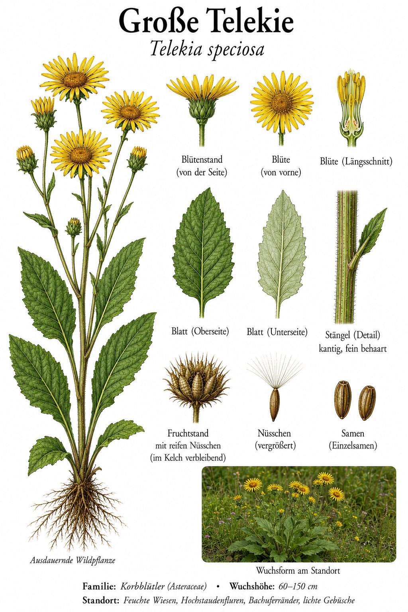

Riesige gelbe Sonnen an Bachläufen — ein Gast aus den Karpaten.

Sonnenblumen-Format
Mit bis zu zwei Metern Höhe und handtellergroßen, leuchtend gelben Körben gehört die Telekie zu den auffälligsten Stauden an feuchten Stellen. Die großen, herzförmigen Blätter duften beim Zerreiben aromatisch. Hummeln und Schmetterlinge lieben die breiten Landeplätze.
Vom Adelsgarten in die Natur
Heimisch ist die Pflanze in den Karpaten und auf dem Balkan; zu uns kam sie als Zierstaude für große Gärten und Parks. An Bächen und in feuchten Wäldern verwildert sie und bildet stattliche Bestände. Benannt ist sie nach der ungarischen Adelsfamilie Teleki, die Wissenschaft und Botanik förderte.
Wissenswertes & Merksätze
Erkennungszeichen
Bis 2 m hohe, kräftige Staude; große, einzeln stehende gelbe Körbe mit schmalen Strahlenblüten; große, herzförmige, gezähnte Blätter.
Das Riesen-Gänseblümchen
Wer die Telekie zum ersten Mal sieht, denkt an eine Mischung aus Sonnenblume und überdimensioniertem Gänseblümchen. Im Garten ein Hingucker — in der freien Natur sollte man sie im Auge behalten, damit sie heimische Arten nicht verdrängt.